A few reasons: I want to showcase some of my Computer Science projects and I had more information I wanted to relay. I also want to show you I am very interested in getting this fellowship and willing to take extra steps and put in extra work.
I love to code. Particularly Computer Graphic simulations. There have been moments in my life where Computer Graphics takes over. The desire to sleep, eat, go outside, or do anything other than code fades away. I become so immersed in my work that I physically can’t stop. I live for these moments. Time slows and I’m in a whole other world; one where the laws of physics are subject to my imagination. I can create simulations of houses orbiting the sun, particles defying gravity, or purple trees.
My favorite aspect of Computer Graphics is, and always has been, creating physics simulations. Now, while I was a Computer Science student, it was a little difficult. I had the technical knowledge to build almost any simulation I wanted, but lacked a lot of the physics knowledge. Of course, I didn’t let that stop me. I learned what I needed to learn so I could build what I wanted to build. But now I’m at a point in my life where I want to learn more about Physics, particularly Astrophysics, and here’s why: I want to create beautiful and mesmerizing simulations. I want to create Virtual Reality experiences that make you forget you are standing on Earth. I want to create Computer Graphic simulations that show the magic of what happens when you use light, color, sound, and creativity to simulate physical phenomena.
So please, pick me. Let me come learn about Astrophysics from you. Let me help you build cool simulations. And let me help you show the world all the beauty that exists beyond our tiny little Earth.
Yes. I know they are not the best. But please don’t let them rule me out from this fellowship. I’m willing to do whatever it takes to get this fellowship. So feel free to call me, set up an interview, or do whatever you need for me to prove that I can handle this fellowship and that I am a qualified candidate regardless of my GPA.
I was a junior in college when I discovered just how vast the universe is. I was reading a 'Wait But Why' blog post (https://waitbutwhy.com/2015/08/how-and-why-spacex-will-colonize-mars.html) and the author showed one of the 'classic' Hubble images (the kind with dozens of galaxies sprinkled throughout the image). Immediately after researching the Hubble and learning how many stars and galaxies exist in the universe, I was shocked. Mostly at the fact that I had gone my entire life lacking this knowledge. But also, at how beautiful the universe is. Since that day, I’ve spent countless hours rummaging through the various Hubble photos, I’ve read many astrophysics books (books like A Brief History of Time, Astrophysics for People in a Hurry, and Cosmos), and watched dozens of galaxy simulations videos for fun. I would have to say that I am thoroughly hooked on Astrophysics. I find it to be an utterly fascinating field and I love the beauty of the imagery and videos associated with it.
Open a technology art museum featuring Astrophysics simulations and images.
I’ve checked out your website, glanced at your Twitter account, and watched a few of your YouTube videos on Astrophysics. After essentially cyber stalking you, I want this fellowship even more; I love how passionate you are about Astrophysics. I am very interested in learning about the field of Astrophysics and would love the opportunity to learn from you.
Reading, painting, drawing, performing slam poetry, traveling, listening to good music, meditation, cooking, kayaking, hiking, soccer.
Curiosity, creativity.
ashleydattalo.github.io
This project is the first full Computer Science project I worked on outside of school just for fun. It was before I was a Computer Science major and was the first time I realized how powerful and creative Computer Science could be. The amount of fun I had working on this project is what lead me to change my major to Computer Science.
This project was for my first Computer Graphics class at Cal Poly. Working on this project was the most fun I've ever had working on a school project. It was also the first time I experienced the magic of using Physics and Computer Science to create mesmerizing simulations. I also pulled my first college all nighter working on this project.
For this project I implemented a 2D Fluid Dynamics Solver based off Jos Stam's research paper Real Time Fluid Dynamics for Games. The paper explains how to simulate fluids and provides a C implementation of the solver. This implementation is based off of the Navier-Stokes equations. For more information on the project go here.
For this project, my friend and I built a website that could turn a light on/off. We used the Philips Hue Kit which has a smart light bulb that allows API Rest calls to change the state of the light bulb. For more information on the project go here.
This project was something I built for fun because I wanted to teach myself how to build a Virtual Reality app and how to interact with the controllers.
The galaxy simulation in Virtual Reality! Best part about this project: drawing black holes and stars using the Virtual Reality controllers. The following video is a screen recording of what the user wearing the headset was seeing (it looks better wearing the headset). For more information on the project go here.


 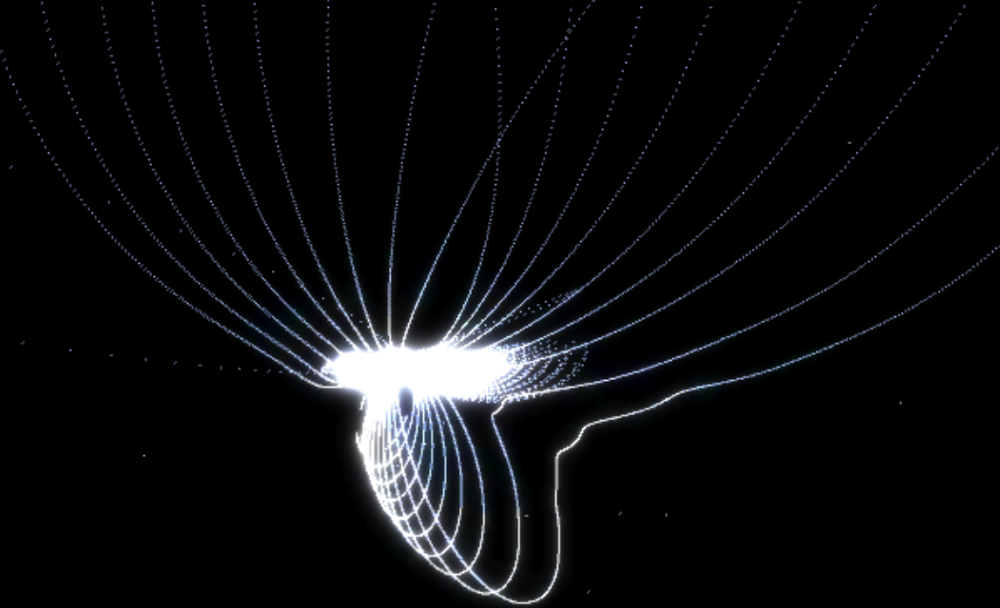
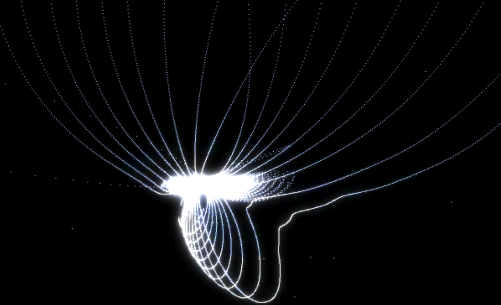


 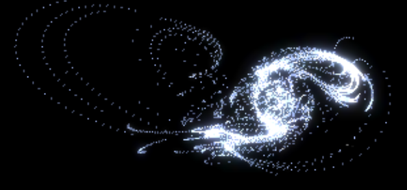
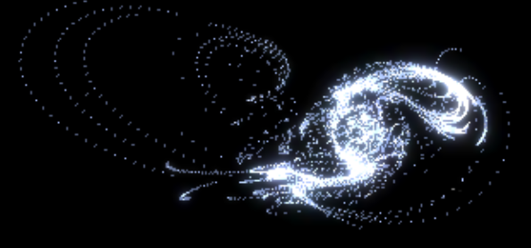


 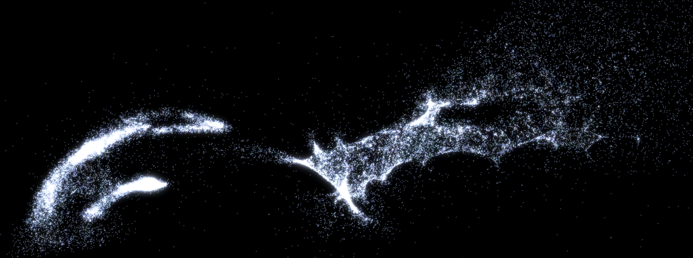
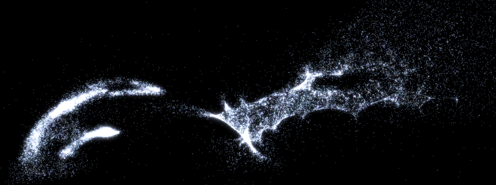


 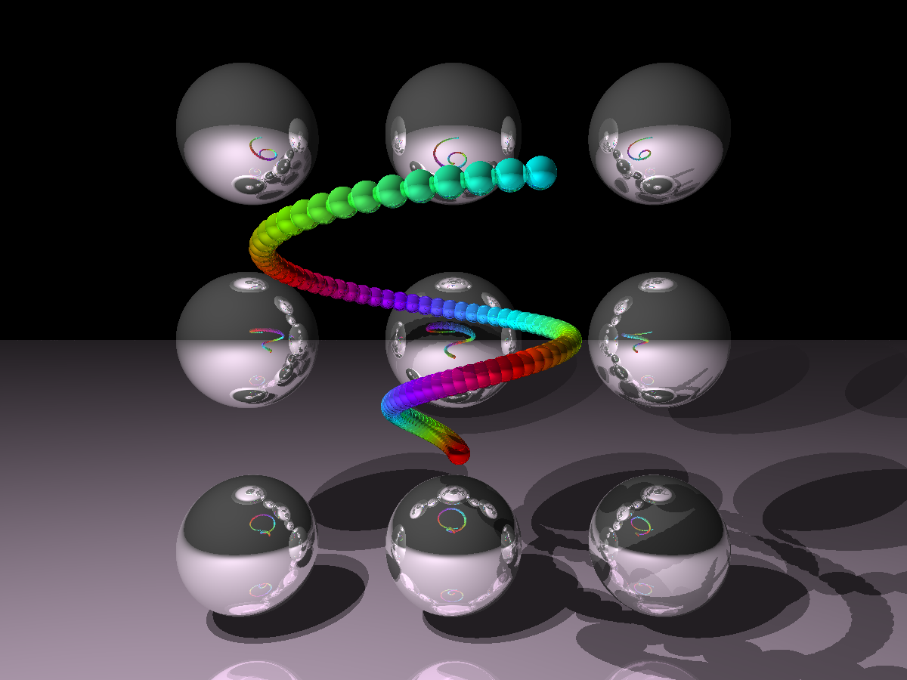
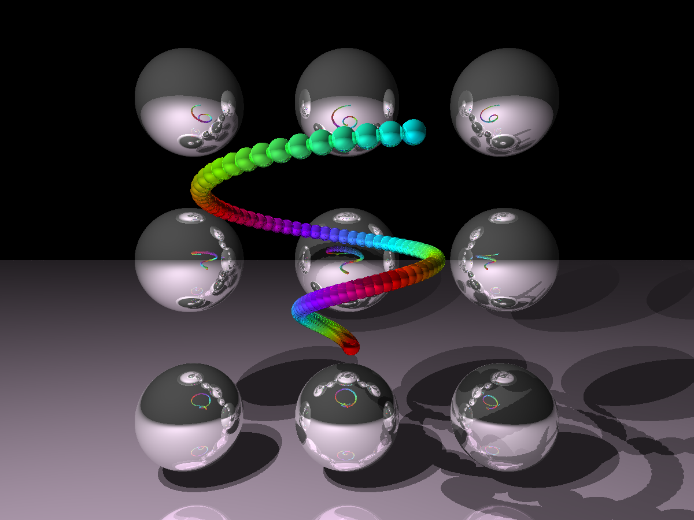

 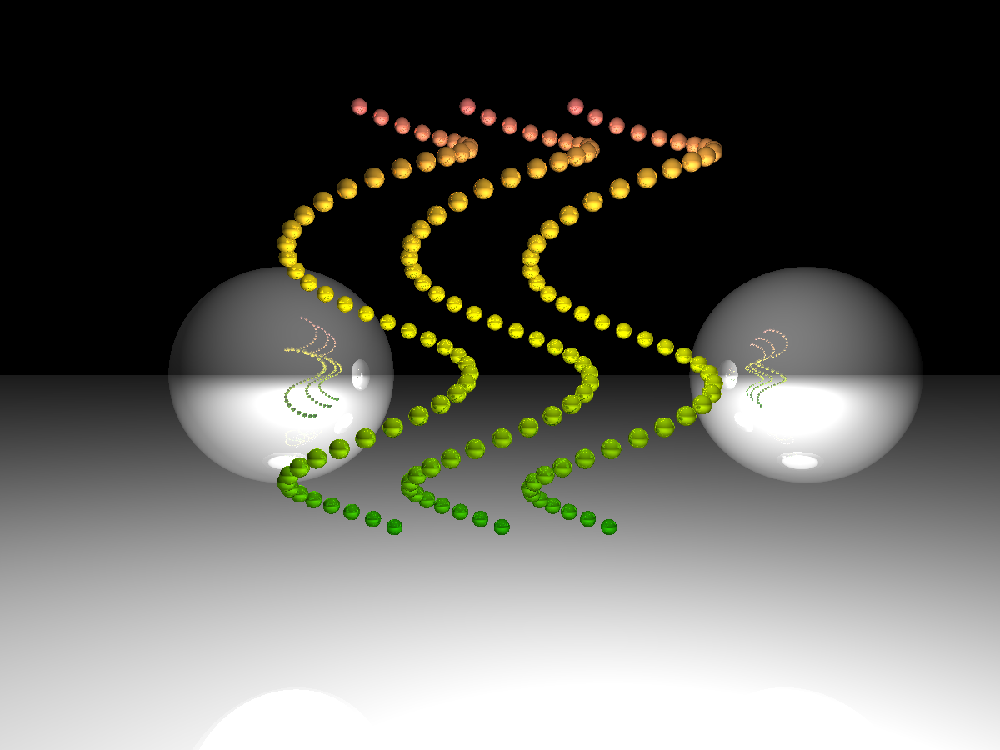
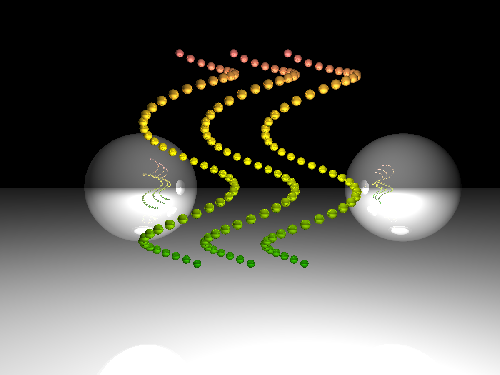


 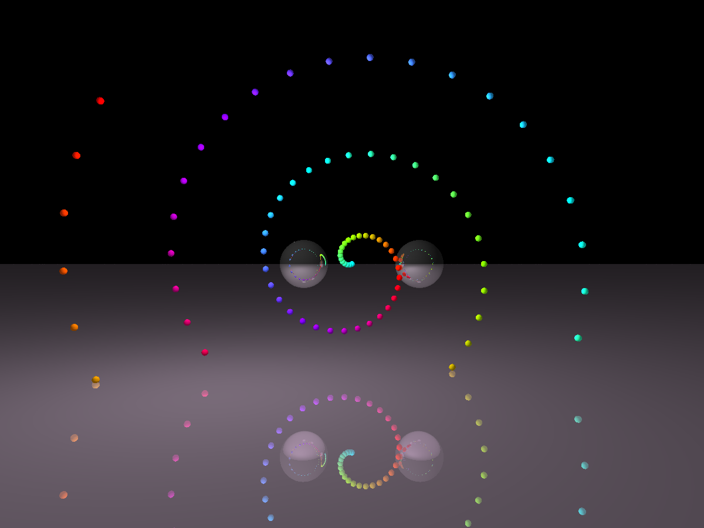
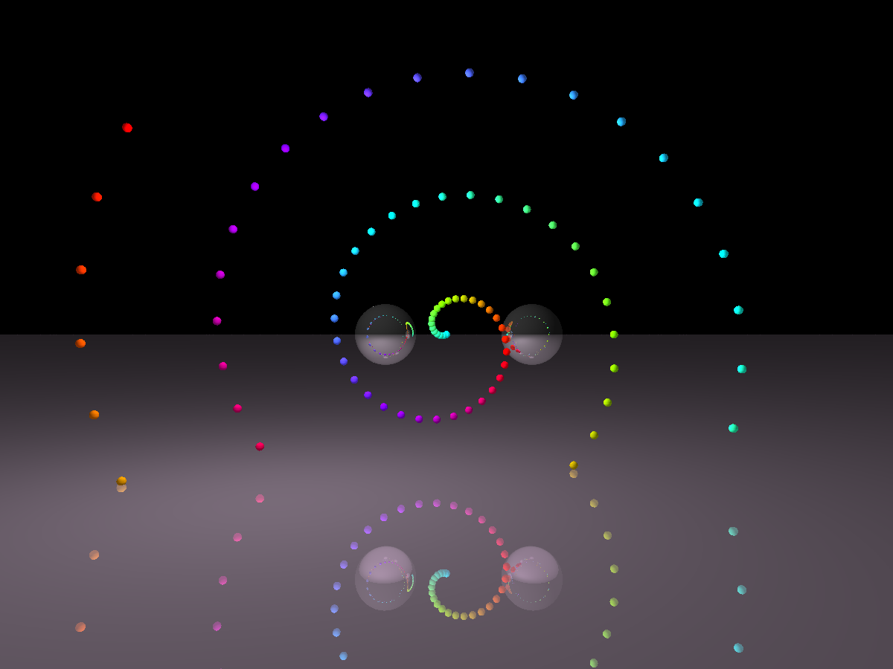